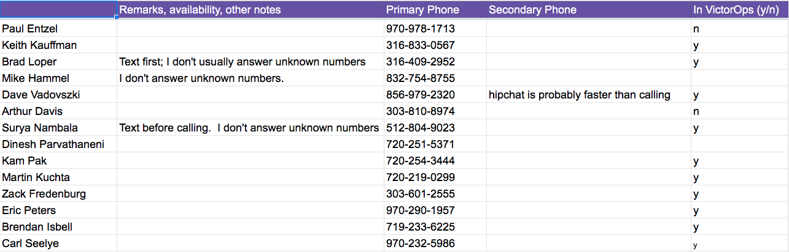

Engage Development On-Call for Assistance¶
- Regardless of the time of day, if you need to get other engineers or developers involved, use this spreadsheet to determine who is on call: https://docs.google.com/spreadsheets/d/11KVhEIXoFLx_k9Xq7uz10uXoAxS61f_ZoakOBH44DBc/edit#gid=778471159
The developer on-call who responds will, if needed, pull in the “2nd level” expert to assist. DO NOT reach out to the 2nd level yourself. Always reach out to the name at the top of the list regardless of the time of day.
- Notice that there are different tabs for different teams, and that each team may have two categories, one for ‘veteren’ and one for ‘new’. E.g., ‘Core Team-Veteran’ and ‘Core Team-New’.
Note
For PLATFORM, call directly using the numbers in the ‘Platform’ tab. For other than platform, use VictorOps (see below).
- When escalating to development, create a manual incident using VictorOps. If for the team to which you’re escalating the issue, there are veteran and new sub-teams, create two incidents, one for ‘veteran’ and one for ‘new’.
- To create an incident manually in VictorOps, follow these steps:
- Log in to VictorOps
- In the ‘Timeline’ section, make sure that the sub-section ‘Incidents’ is selected
- In the ‘Incident’ section, click the blue button ‘Create Incident’
- Click on the ‘Send To’ box and select the users from the ‘Users’ tab:
- start typing the name of the on-call developer and select it
- Populate ‘Incident Description’ following this format: ‘Need immediate help with CSD-123- Call John at 555-123-4567’, where John is ‘you’, CSD-123 is the JIRA ticket number and ‘555-123-4567’ is your phone number.
- If there is information about a meeting conference where the case is being discussed (e.g. webex, hipchat, gotomeeting) populate this information in the ‘Incident Body’ section.
- When the incident is created, you should see a ‘success’ message and activity in the timeline related to this new incident:
- When creating two incidents (one for veteran and one for new), use the same description and body
- Create one manual incident and address it to a veteran (from the veteran tab)
- If the veteran doesn’t respond within 10 minutes, use the process to call the next person on the list
- For new people we don’t need to continue sending incidents. Chances are that at least one of the three people to whom the incident was addressed is going to acknowledge the alert and join the call
- If no one has responded and you run out of people to call, contact the on-call CPE manager.